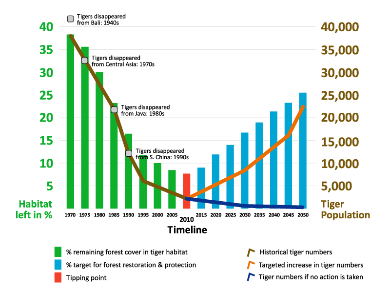

Tiger
The primary threats to the survival of Siberian tigers are poaching and habitat loss from intensive logging and development. The Siberian Tiger is classified as endangered by the IUCN. South China tigers (Panthera tigris amoyensis) are the smallest of all the tiger subspecies; it is also the most critically endangered.
What causes tigers to be endangered ?
The main reasons tigers are endangered—in most cases cases, critically endangered—are illegal hunting for their pelts, meat and body parts (used in folk medicines) as well as habitat loss that results from logging and other forms of forest destruction.
How many Tigers are left in 2018 ?
The latest data is from 2016 and estimates around 3,900 tigers in the wild. The US captive population of tigers exceeds 5,000.
Tigers occupy a variety of habitats from tropical forests, evergreen forests, woodlands and mangrove swamps to grasslands, savannah and rocky country. They are mostly nocturnal (more active at night) and are ambush predators that rely on the camouflage their stripes provide.
REMAINING TIGER SUBSPECIES: